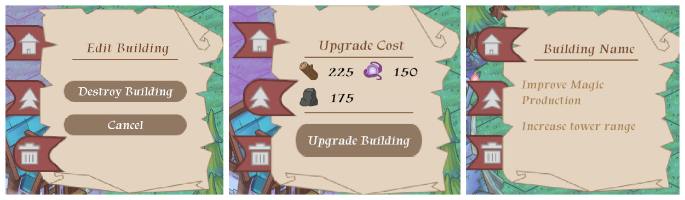

W25 Blog Post #6
This meeting was a formal work session, given that we're so close to the playtest on April 22nd. I spent a lot of my time talking with teammates about what needed to be finished prior. With no formal tasks of my own my role became mostly looking through the game and filling in any missing gaps/problems.
One small issue which came up, which must have been in the game since the project was switch to URP earlier this semester, is that the tiles are occasioanlly drawn out of order, even when using "individual" mode in the tilemap. This problem was mostly observed while attempting to incorperate multiple different ground tile types and ones from different textures didn't layer correctly. After much testing the solution to this ended up being adding sprite atlasses for the different layers of the world. My understanding is that doing this allows Unity to refrence the sprites from the same texture and have the draw calls of the tiles be batched together, preserving correct draw order.
With one week left to go before showcase a lot of the work left to be done included final touches, art implementation, and incorperating features. Similar to last week, my role became to work on miscellaneous details that I noticed, though I alsoknew I wouldn't be able to commit much time to project this week due to other school work, primarilly EECS 494 at the very same showcase.
One of the last things I needed to complete prior to the showcase was the Building Tooltip. All the features included in this tooltip were already accessible by other means, but it provided a centralized way for players to interact with the buildings.
Building Tooltip pages